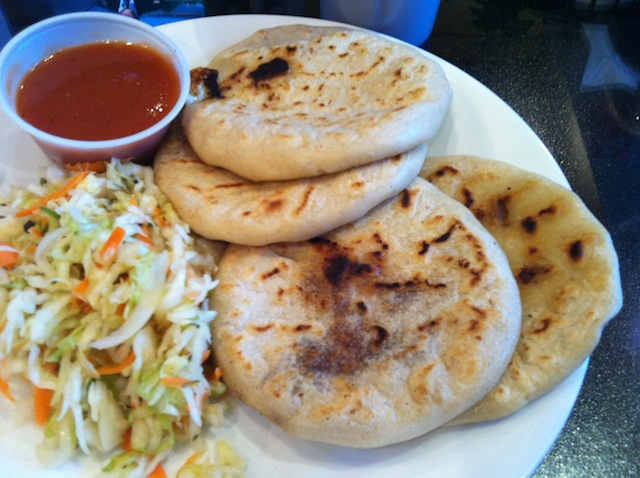
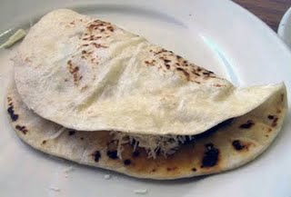

page1
page2
page3
page4
Home
Centro America food in these page
EL Salvador

Honduras

on the top the picture of El Salvador is a typical food that is called Pupusas
on the top the picture of Honduras is Baleada